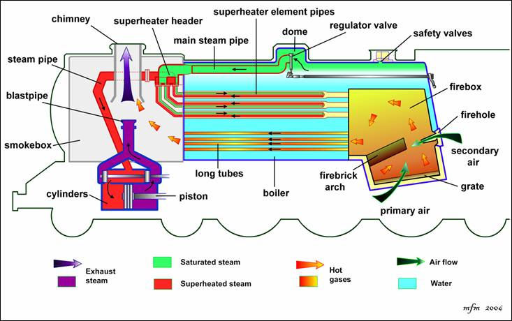

How a Steam Engine Works

A steam engine converts heat energy into mechanical energy. It does this by using steam created from boiling water.
First, a fire is lit in the engine's firebox. The heat from the fire boils water in a boiler, turning it into steam.
The steam builds up pressure inside the boiler. This high-pressure steam is then sent into a cylinder where it pushes a piston back and forth.
The piston is connected to rods and wheels. As the piston moves, it turns the wheels or machinery connected to the engine.
After the steam has done its work, it leaves the cylinder and is released or cooled into water again. The process then repeats continuously while the engine is running.
Main Parts of a Steam Engine
Firebox: Burns fuel to produce heat.
Boiler: Holds water and turns it into steam.
Cylinder: Contains the piston.
Piston: Moves back and forth using steam pressure.
Flywheel: Stores energy and helps keep the engine running smoothly.